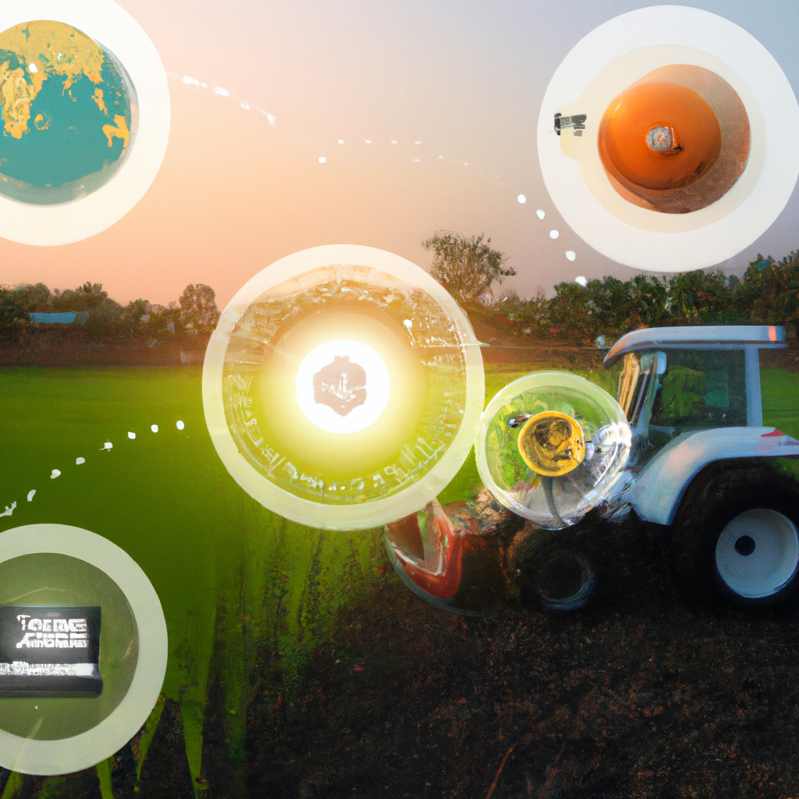

EcoAgriHub is a comprehensive, sustainable farming ecosystem that combines green-energy powered e-combines and e-tractors, drone fleets for mapping and crop management, and an AI-based decision-making system for optimized crop selection and farm management.
Optimize crop selection and farm management using advanced AI-driven analytics and real-time data insights.
Reduce emissions and increase efficiency with our green-energy powered e-combines and e-tractors.
Utilize drone fleets for precise mapping and crop management, enhancing agricultural productivity.